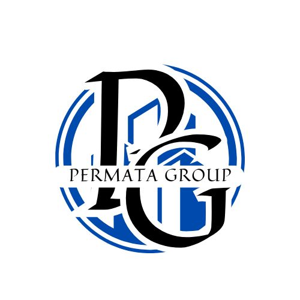

Beranda
Selamat Datang...
Logo Perusahaan

logo dari perusahaan Permata Group. Huruf “P” pada logo tersebut menunjukan huruf pertama dari “Permata” sedangkan “G” dari logo diatas menunjukan “Group”, dan tulisan “PERMATA GROUP” adalah nama dari perusahaan ini. Warna hitam pada tulisan “PG” memiliki arti dari simbol kekuasaan yang menjelaskan bahwa perusahaan ini akan selalu berdiri kokoh dan menguasai pasarnya. Warna biru pada gambar bangunan menjelaskan bahwa perusahaan ini dapat membangun kepercayaan dengan mengutamakan kualitas yang terbaik. Gambar bangunan di belakang tulisan “PG” artinya perusahaan ini memfokuskan dan memiliki keahlian dibidang konstruksi sipil, desain interior, arsitektur, dan konsultan perancangan tata letak fasilitas.
Tentang
.
Permata Group adalah sebuah perusahaan yang didirikan pada tahun 2015 yang berada pada bidang konstruksi, desain interior, arsitektur, dan konsultan perancangan tata letak fasilitas. Perusahaan ini didirikan karena pemilik perusahaan adalah seorang lulusan teknik industri yang menekuni bidang perancangan tata letak fasilitas, kemudian kedalam bidang desain interior, arsitektur, dan konstruksi.
Kontak
Hubungi kami di PermataGroup287@gmail.com.
Ikuti Instagram kami:
@izaddd12?igsh
@nadhofaa?igsh